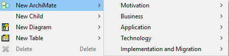
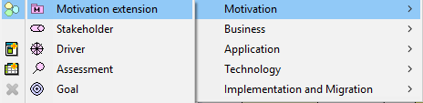
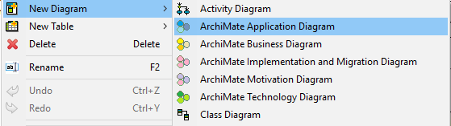
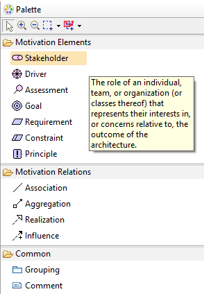
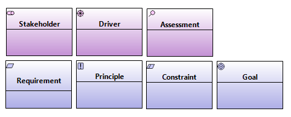
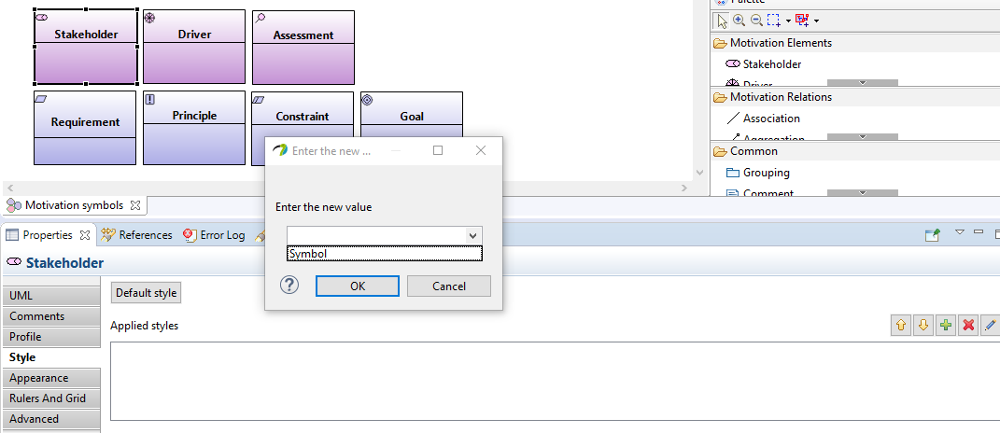
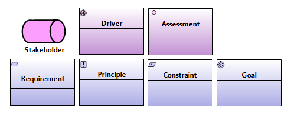
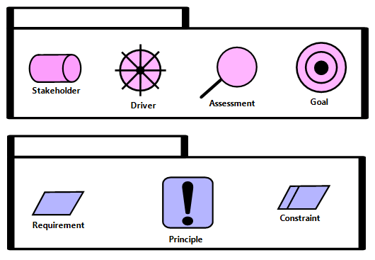

Modeling and the palette
About ArchiMate layers and extensions
In ArchiMate® 2.1 there are three main layers and two extensions. The three main layers are Business layer, Application layer and Technology layer. The extensions are Motivation and Implementation and migration. The five layers/extensions are listed below in a logical order, with the most strategic layer first and more realization related layers below in a logical, consecutive order.
- Motivation
- Business
- Application
- Technology
- Implementation and migration
Packages for each above layer/extension can easily be created by right-clicking any package and choosing New ArchiMate → [layer/extension area] → [layer/extension package].

Diagram: Right click exposing all existing layer/extension areas

Diagram: Selection of the layer/extension package (Motivation in this case)
How to create ArchiMate diagrams
There are five different diagrams in the extension, one for each layer/extension. Each such diagram has a customized palette/toolbar with elements and relations relevant for the current layer/extension/diagram.
To create a diagram, right click on any type of package in the Model Explorer and select ArchiMate → ArchiMate [diagram type]. The diagram will be created to the package that you right clicked.

Diagram: Right click for diagram creation
Using the palette
Each diagram has a unique, customized palette (toolbar) with all the relevant ArchiMate elements and relations needed for that particular diagram.
Each element and relation has a floating text (tooltip) with excerpts from ArchiMate specification, so that you can get guidance based upon information straight from the source.
The elements and relations are groped into sub sections of the palette so that it is easy to distinguish between elements, relations and other things.
Some elements re-occur between palettes and the Common sub section is the same for all palettes.

Diagram: Palette example with tooltip from the actual ArchiMate specification
Switching between rectangular and symbol presentation
The ArchiMate specification describes two ways of presenting elements - "pure symbol" or "rectangular". The pure symbol presentation simply shows the element on a transparent background and hence is "graphical" in nauture.
The rectangular presentation presents a rectangular with the ArchiMate symbol to the upper right.
The add-in supports both these presentation types and the default is the rectangular presentation type.

Diagram: Motivation elements with rectangular presentation (default)
You can mix rectangular and pure symbol shapes within the same diagram. To change the presentation type for an element, do the following:
- Select the element
- Click on the Style property tab
- Click on the plus sign
- Select Symbol in the drop down list
- Click OK

Diagram: Changing presentation type to symbol

Diagram: Effect after changing one element to symbol presentation
About “flat modeling” compared to UML
ArchiMate as modeling notation and concept is "flat" in comparison with UML for example. ArchiMate does not offer "packages" or other types of containers/containment of element.
The closest concept to any type of containment in ArchiMate is the Grouping element. However, this element is not hierarchical by nature and does all the "containment" within a diagram, i.e. a Grouping element is within the diagram sized to fit other elements and all the "grouped" elements are placed within the boundary of this element.
Note here that all elements added to the Grouping/diagram exist within the same "dimension", i.e. you can not "drill down" within a Grouping to find its content. The semantics for what is contained within the Grouping is all within the diagram. This is a difference compared to UML packages.
The above has had the implications that the Grouping element in the add-in is based upon the UML element type Component rather than Package, because UML packages do not easily lend themselves for graphical grouping of elements. UML packages want hierarchical information.
Note: Due to limitations in Papyrus, it is not possible to add elements directly from the palette to a Grouping. Instead, the user will have to add elements to the side of the Grouping element and after that "drag" it onto the Grouping element/area.

Diagram: Example of grouped elements
Note about relations
UML has a lot of decorations on relations, for example names, roles and multiplicity. All these default decorations in UML have been hidden in order to reflect and honor the ArchiMate specification as much as possible. Therefore, relations in the add-in all look quite "plain" in relation to UML.